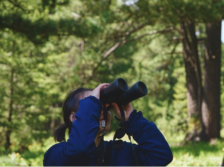
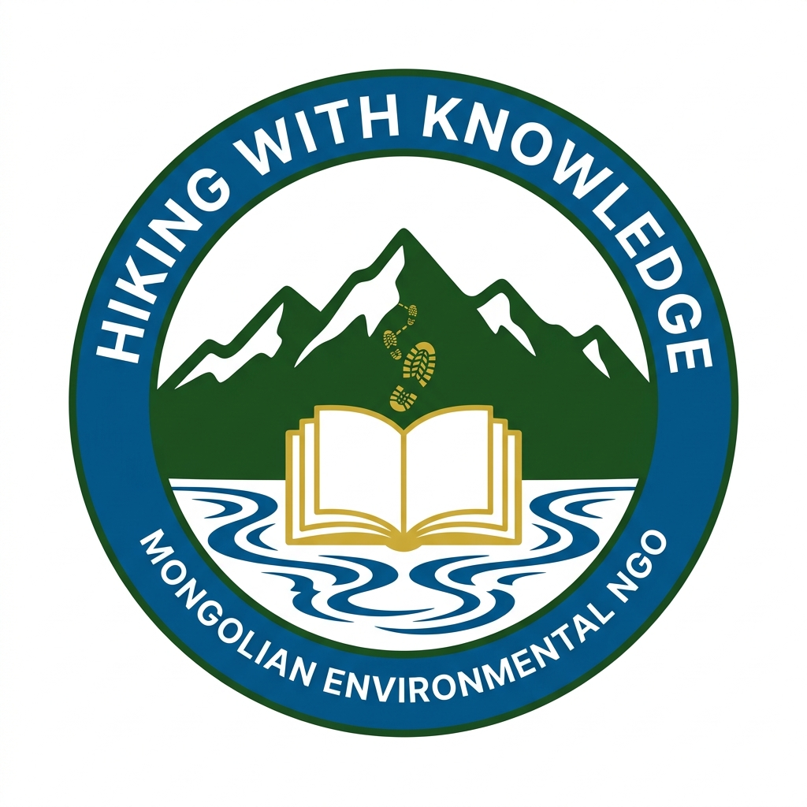
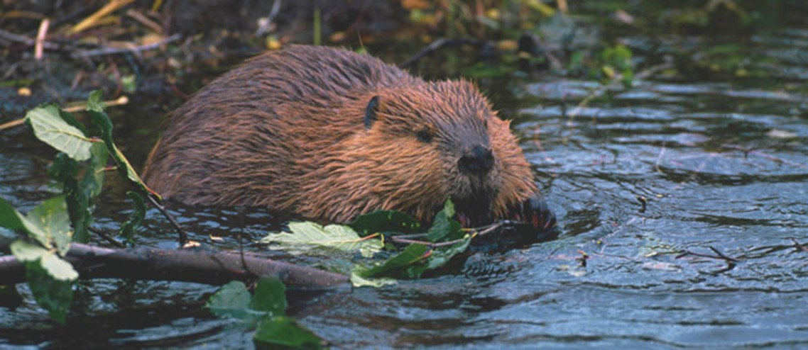
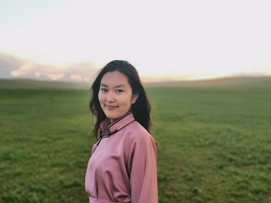

Biodiversity in the Field
Youth & BiodiversityConnect young people with biodiversity observation, scientific learning and environmental responsibility.

Hiking with Knowledge is a Mongolian field-based environmental learning NGO. We connect youth, experts and communities with biodiversity, water, land, science and traditional knowledge through direct experience.
HWK turns outdoor experiences into practical environmental learning. Young people learn alongside researchers, conservation practitioners, rangers and local knowledge holders.
Mongolia offers a powerful setting for field-based environmental learning across forests, wetlands, river systems, rangelands and cultural landscapes. HWK contributes local field experience, youth engagement and access to expert-led learning formats.

Connect young people with biodiversity observation, scientific learning and environmental responsibility.

Use rivers, wetlands and freshwater biodiversity to strengthen water and ecosystem learning.

Connect youth with rangeland stewardship, seasonal pasture knowledge and Mongolia’s living nomadic knowledge.
Programme funding / sponsorship • Technical expertise • Research collaboration • Institutional partnership • Youth/community engagement • Co-created programmes
Hiking with Knowledge — COP17 partnership overview.
Youth & Biodiversity — FINAL Concept Note.
Water & Ecosystem — FINAL Concept Note.
Rangeland, Nomadic Knowledge & Youth — FINAL Concept Note.
Tell us which opportunity fits your work, and we can share the matching concept and arrange a focused follow-up conversation.